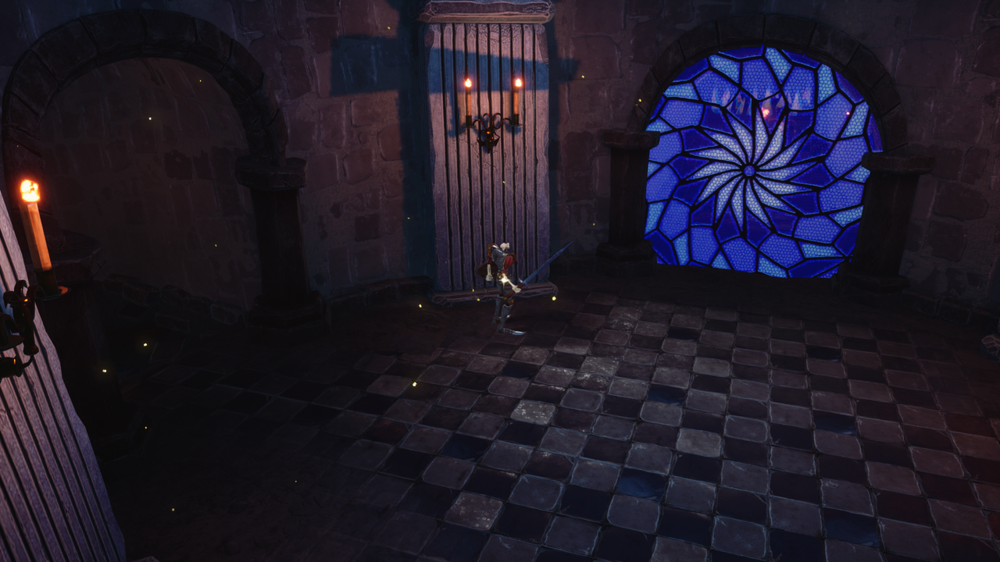
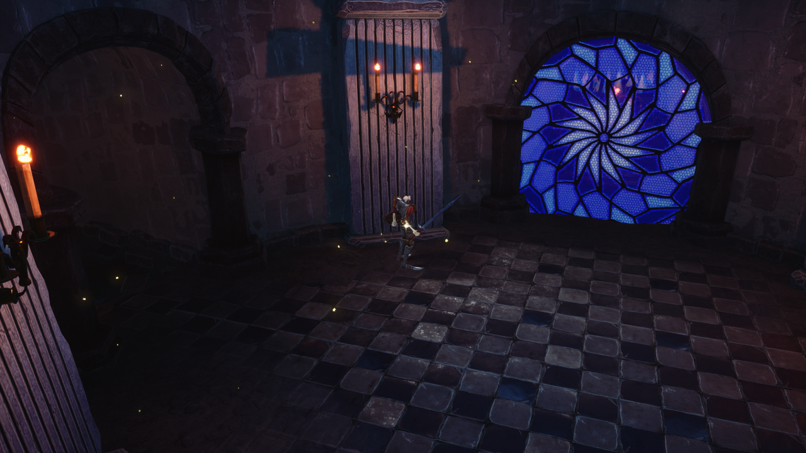
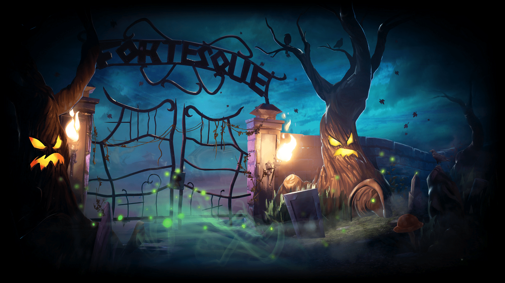
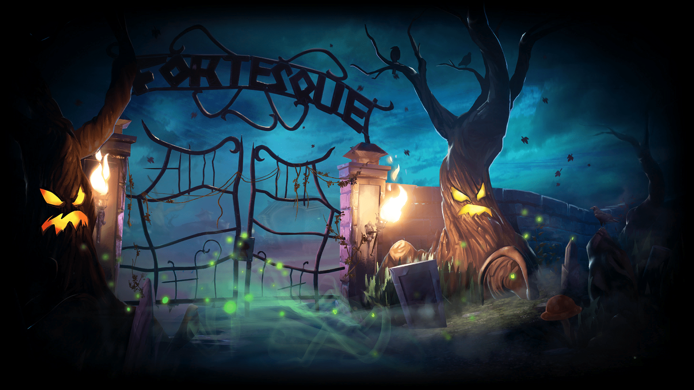

MediEvil Game
"MediEvil" is a beloved action-adventure game set in the medieval kingdom of Gallowmere. Join Sir Daniel Fortesque on his quest to defeat the evil sorcerer Zarok and save the kingdom from the undead menace.
Image Gallery


"MediEvil" is a beloved action-adventure game set in the medieval kingdom of Gallowmere. Join Sir Daniel Fortesque on his quest to defeat the evil sorcerer Zarok and save the kingdom from the undead menace.
The game "MediEvil" was developed by SCE Cambridge Studio and originally released for the PlayStation console in 1998. It gained critical acclaim for its unique blend of action, humor, and horror elements.
Welcome to the eerie world of Dan's Crypt, where ancient secrets and undead horrors await. In this chapter, you'll accompany Sir Daniel Fortesque as he explores the crypt's dark chambers, facing off against skeletal foes and solving puzzles to uncover the truth.
 

 

Prepare to enter the haunted Graveyard, where restless spirits and ghoulish creatures roam. Sir Daniel's quest continues as he battles his way through this eerie burial ground, searching for answers and confronting the malevolent forces that threaten the kingdom.
Revisit the Graveyard once more as you uncover new mysteries and face more formidable adversaries. Sir Daniel's determination to protect Gallowmere grows stronger with each step as he embarks on another perilous journey in this chapter.
Ascend to the Hilltop Mausoleum, where ancient tombs and dark secrets await your exploration. Sir Daniel faces both physical and metaphysical challenges as he climbs to new heights to uncover the kingdom's hidden history.
Return to the Mausoleum, where the past and present collide. As the plot thickens, Sir Daniel must confront his destiny and face formidable foes once again in this chapter filled with twists and revelations.
Venture into the bizarre world of The Pumpkin Serpent, where unusual creatures and uncanny challenges await. Sir Daniel's courage is put to the test as he unravels the mysteries of this surreal chapter and battles peculiar adversaries.
Descend into the madness of the Asylum, where the line between reality and illusion blurs. Sir Daniel faces psychological horrors and mind-bending puzzles as he explores the darkest corners of this haunting institution.
Step outside into The Asylum Grounds, where the battle against darkness continues in an open and perilous environment. Sir Daniel's determination is tested as he navigates this treacherous landscape to uncover the truth.
Return to the Asylum's eerie interior, where the horror intensifies. Sir Daniel's quest takes unexpected turns, and he must confront even greater challenges within the asylum's walls.
Enter the mysterious realm of The Time Device, a place where time itself is distorted. Sir Daniel's final battle against the forces of darkness unfolds in this climactic chapter, where the fate of Gallowmere hangs in the balance.